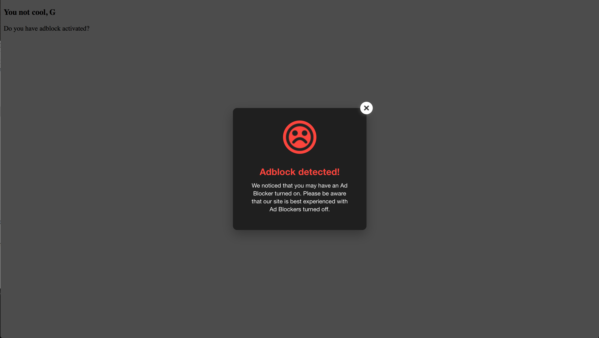
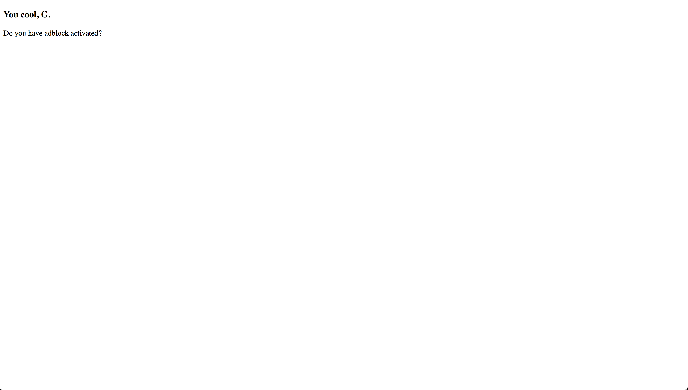

Created by Rebecca Schwilm for WIA 11/2015
Adi.js is a simple plugin for websites that detects if an adblocker is active on the user's browser. It can be used to prevent access, or just notify the user that the website may be browsed better without an adblocker.
When installing adi.js onto a page, the order of the links have to be exact. Make sure everything is in the right order! You'll be doing your code in the "Adi.js-master/jquery.adi.js" file.
<link rel="stylesheet" type="text/css" href="includes/Adi.js-master/jquery.adi.css" />
<script src="includes/jquery-1.11.3.min.js">
</script>
<script src="includes/Adi.js-master/advertisement.js">
</script>
<script src="includes/Adi.js-master/jquery.adi.js"></script>
You will set up your html page as normal. We're going to have a very simple page in our body. For example:
<body>
<div class="container">
</div>
<p>Do you have adblock activated?</p>
</body>
You are going to want to go into the "advertisement.js" file. Ensure that it reads as follows:
/**
* if adblock is active, this file will be blocked
* so $.adblock is not defined
*/
jQuery.adblock = false;
You will have to go to the "JQuery.adi.js" file to put in your own defaults. Below is an example which will make a modalcome up to alert the user to their adblocker being active. It is commented out, but you do have the option to add in a re-direct when the modal is closed.
$(document).ready(function () {
$.adi({
theme: 'dark',
onOpen: function (el) {
/* $.adi working with animate.css */
el.find('.jquery-adi_content').addClass('animated bounceInDown')
},
onClose: function (el) {
/**
* Redirect
* ========
* window.location.href('http://some-website')
*
* Dont let user to see content / reload page
* ==========================================
* window.location.reload(true);
*/
},
inactive: function () {
var tpl = <h3>You cool, G</h3>;
$('.container').append(tpl);
console.log('Adblock not detected :)');
},
active: function () {
var tpl = '
<h3>You not cool, G</h3>';
$('.container').append(tpl);
console.log('Adblock detected :(')
}
});
});
Below you can see the begining section of code to set up your adblock detector. It is what opens the modal to alert the user to their adblocker being active! There are two themes to choose from, titled "dark" and "light". onOpen is the code for the modal to open, and onClose tells you what will happen to the website (and where the user will go) after the modal is closed.
$.adi({
theme: 'dark',
onOpen: function (el) {
/* $.adi working with animate.css */
el.find('.jquery-adi_content').addClass('animated bounceInDown')
},
Here, you can add a redirect so the user can not see the page with an adblocker active.
onClose: function (el) {
/**
* Redirect
* ========
* window.location.href('http://some-website')
*
* Dont let user to see content / reload page
* ==========================================
* window.location.reload(true);
*/
},
Below is the code for when an adblocker is detected. When an adblocker in inactive, the containter in the html page will read "You cool, G.". When an adblocker is active, it will read "You not cool, G."
inactive: function () {
var tpl = <h3>You cool, G</h3>;
$('.container').append(tpl);
console.log('Adblock not detected');
},
active: function () {
var tpl = <h3>You not cool, G</h3>;
$('.container').append(tpl);
console.log('Adblock detected')
}
Adblocker active:
Adblocker inactive:
